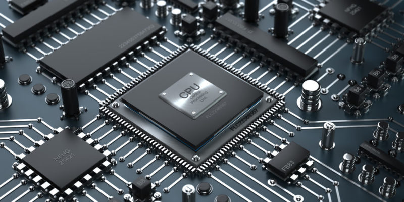

Antes de nada, vamos a definir exactamente lo que es una CPU o un procesador. Como bien indican sus siglas en inglés (Central Processing Unit) es la unidad de procesamiento encargada de interpretar las instrucciones de un hardware haciendo uso de distintas operaciones aritméticas y matemáticas.
Para que lo entendáis, son como el cerebro de un ordenador, capaces de leer e interpretar las señales que les manda el usuario a través de los distintos componentes y resto de aplicaciones. Todo ello en cuestión de nanosegundos y en código binario. También se encarga de generar información de salida en formato de vídeo a través de una pantalla o un monitor.
